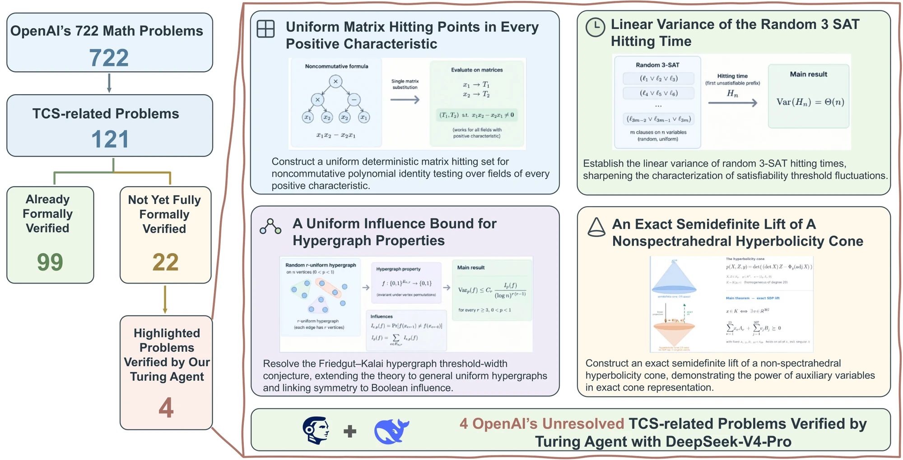

Turing AgentFaithful Automated Formal Verification in Theoretical Computer Science
A unified agent harness that turns AI-generated mathematical arguments into machine-checked Lean developments. It goes beyond isolated theorem proving to orchestrate research-level verification end to end — from faithful statements to complete, kernel-checked proofs.

Why a dedicated harness?
LLMs and agents are moving from competition problems toward research-level mathematics. The open question is how to turn AI-generated reasoning into trustworthy, machine-verified knowledge. A Lean statement can compile while quietly changing the domain, quantifiers or assumptions of the original claim, so syntactic validity alone does not guarantee faithfulness — and long proofs need decomposition, dependency management and reuse to be completed at all.
Turing Agent treats verification as an agent-harness problem. Its two-scale architecture pairs a theorem-formalization agent with proof-formalization agents, coordinated through a proof DAG, parallel construction, an experience pool and selective semantic review. Against direct generation, Codex CLI and Claude Code on the same models, it delivers the strongest faithful formalization and completes formal proofs that earlier AI efforts left unfinished.
Architecture & results
Faithfulness, validity, completeness; TF/PF agents, proof DAG, experience pool; benchmark results.
Read → OpenAI problems4 research problems
Problem, target theorem, OpenAI's existing formalization, and how Turing Agent finished the proof.
Browse → Demos6 demos & traces
Benchmark runs and interactive replays of full proof traces beyond the OpenAI collection.
Open → WorkshopsInternal seminars
Schedule, slides, recordings and code from our internal workshop series.
See schedule →News
Citation
If you use Turing Agent or the results on this page, please cite:
@techreport{turingagent2026,
title = {Turing Agent: Faithful Automated Formal Verification
in Theoretical Computer Science},
author = {{Turing Agent Team}},
institution = {Shanghai Artificial Intelligence Laboratory},
year = {2026}
}